Introduction
Lab Activity 7 · Week 8 · CSC557 Mobile Programming
Objectives
- Showing a scrolling list with a
ListViewand anArrayAdapter - Designing your own layout for one row of a list
- Building a
RecyclerViewwith a custom Adapter, a ViewHolder and a LayoutManager - Seeing how RecyclerView recycles row views, and handling taps on a row
Duration: 2 hours. You need: Android Studio and an emulator or Android phone.
| Part | What you do | Time | Marks |
|---|---|---|---|
| Activity 1: ListView | Show a list of names with an ArrayAdapter, then tap a name | 30 min | – |
| Activity 2: RecyclerView | Show contacts with a picture, name and phone number | 50 min | – |
| Activity 3: Recycling and clicks | Watch rows being reused in Logcat, then make rows clickable | 25 min | – |
| Activity 4: Bug hunt | Predict what six broken snippets do | 15 min | – |
| Post-Lab (after the lab) | Add an email address to every contact | – | 10 |
| Total | 120 min | 10 |
The questions in the activities are for class discussion and are not marked. Only the Post-Lab is marked (10 marks).
How to use this lab
We build the apps together in class. This lab does not give you all the code. Some parts are complete, some have blanks, and some give you only a specification. The parts look like this:
// grey italic: code that is already in the file// yellow: new code that is given to you, type it in// red: a TODO or a ____ blank that YOU must complete| Box | What it means |
|---|---|
| PREDICT FIRST | Write down what you think will happen before you run the app. Then run it and compare. A wrong guess is fine: it is how you learn. |
| YOUR TURN | A task with a specification and no code. Build it from what you learned in the activity. |
| CHECKPOINT | Show your app to the lecturer or the person beside you before you move on. |
| Discussion | Questions we discuss in class. They are not marked. |
Why lists?
Most apps show a scrolling list: contacts, messages, news, products, recipes. Each row has the same design but different data. Android does not make you build 100 rows by hand. You design one row, and an Adapter fills it with the data for each position.
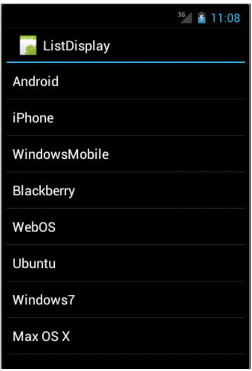
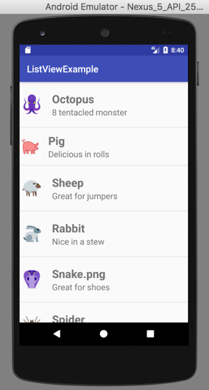
Two lists: one line of text per row (left), and a picture with two lines of text per row (right)
Activity 1 – ListView with an ArrayAdapter
We start with the simplest list: one name per row. Android’s ArrayAdapter already knows how to put a String into a TextView, so we only need the data, a row layout and three lines of code.
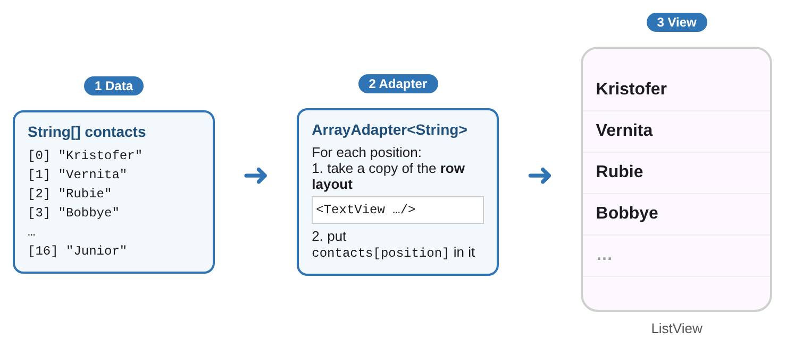
The data, the Adapter and the view. Keep this picture in mind for the whole lab.
- Create a new Android project named
ContactListusing the Java language. Choose Empty Views Activity as the template. - Open res/layout/activity_main.xml in Code view and replace its content. We use a vertical
LinearLayoutwith oneListView:res/layout/activity_main.xml<?xml version="1.0" encoding="utf-8"?><LinearLayout xmlns:android="http://schemas.android.com/apk/res/android" xmlns:tools="http://schemas.android.com/tools" android:id="@+id/main" android:layout_width="match_parent" android:layout_height="match_parent" android:orientation="vertical" tools:context=".MainActivity"> <!-- holds the list of contact names --> <ListView android:id="@+id/contactList" android:layout_width="match_parent" android:layout_height="match_parent" /></LinearLayout>Keep
android:id="@+id/main"on the root. The template’s MainActivity usesR.id.mainto add padding for the status bar. - In MainActivity.java, add the data as a field of the class. This is the data part of the picture above.
java/com/example/contactlist/MainActivity.java
public class MainActivity extends AppCompatActivity { // contacts data private final String[] contacts = {"Kristofer", "Vernita", "Rubie", "Bobbye", "Harley", "Christia", "Jacqualine", "Linwood", "Shakia", "Modesta", "Dala", "Arla", "Pattie", "Elicia", "Stefania", "Carrie", "Junior"}; @Override protected void onCreate(Bundle savedInstanceState) { // ... the template code stays ... }} - Now the Adapter. We first use a row layout that is built into Android,
android.R.layout.simple_list_item_1. It is oneTextView. Add these lines at the end ofonCreate()and fill in the blank:java/com/example/contactlist/MainActivity.java (end of onCreate)// the Adapter: data (contacts) + row layout (one TextView) ArrayAdapter<String> contactAdapter = new ArrayAdapter<>(this, android.R.layout.simple_list_item_1, contacts); // the view: give the Adapter to the ListView ListView contactList = findViewById(R.id.contactList); contactList.setAdapter(____); - Run the app. You should see picture (1) below. Scroll the list.
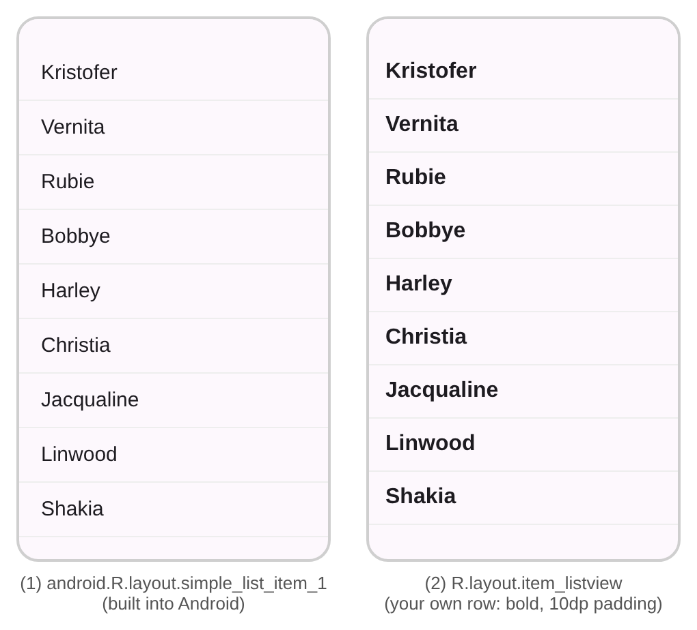
- Now design your own row. Right-click res/layout and choose New › Layout Resource File. Name it
item_listview, set Root element toTextView, and click OK. Replace its content:res/layout/item_listview.xml<?xml version="1.0" encoding="utf-8"?><!-- Design of ONE row. The ArrayAdapter needs the root to be a TextView. --><TextView xmlns:android="http://schemas.android.com/apk/res/android" android:id="@+id/label" android:layout_width="match_parent" android:layout_height="wrap_content" android:padding="10dp" android:textSize="16sp" android:textStyle="bold" /> - Make the names respond to a tap. A ListView tells you which position was tapped. Add this at the end of
onCreate()and fill in the blank so the Toast shows the name, for example You tapped Rubie:java/com/example/contactlist/MainActivity.java (end of onCreate)contactList.setOnItemClickListener(new AdapterView.OnItemClickListener() { @Override public void onItemClick(AdapterView<?> parent, View view, int position, long id) { String name = ____; // the name at this position Toast.makeText(MainActivity.this, "You tapped " + name, Toast.LENGTH_SHORT).show(); } });This is the same listener pattern as
setOnClickListener()for a Button in week 6. Android callsonItemClick()for you and passes the position of the row that was tapped.
Discussion 1
a. Point to the three parts of the picture at the start of this activity in your code: which line is the data, which is the Adapter, and which is the view?
b. We wrote textSize="16sp" but padding="10dp". Why do we use sp for text and dp for everything else? (Try Settings › Display › Font size on the emulator.)
c. The tap gives you a position (0, 1, 2…) and not the name. Why is the position enough?
d. We now want a picture and a phone number in every row. Why can the ArrayAdapter not do this? (Look at what it needs the row root to be.)
Activity 2 – RecyclerView with a custom Adapter
Each contact now has three pieces of data: a picture, a name and a phone number. The ArrayAdapter can only put one String into one TextView, so we write our own Adapter. We also switch to RecyclerView, which is what new Android apps use for lists.
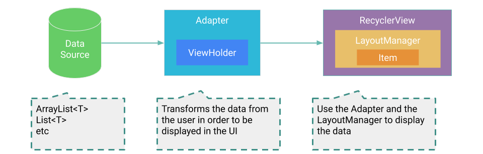
The Adapter turns the data into row views (with a ViewHolder). The RecyclerView uses a LayoutManager to place the rows.
| Requirement | Where you do it in this activity |
|---|---|
| 1. Data class and data | Steps 2–4 |
| 2. Row layout | Step 5 |
| 3. Adapter and ViewHolder | Steps 7–11 |
| 4. RecyclerView in the layout | Step 6 |
| 5. Connect them | Step 12 |
- Create a new project named
ContactCards(Java, Empty Views Activity). - Copy the seven contact pictures
profile1.png…profile7.png(in the lab files) into app/src/main/res/drawable. You can paste them straight onto the drawable folder in Android Studio. - Create the data class. Right-click the com.example.contactcards package, choose New › Java Class, and name it
ContactVO(VO = value object: a class that only holds data). Type the fields and the constructor:java/com/example/contactcards/ContactVO.javapublic class ContactVO { private final int profilePic; // a drawable id, for example R.drawable.profile1 private final String name; private final String phoneNo; public ContactVO(int profilePic, String name, String phoneNo) { this.profilePic = profilePic; this.name = name; this.phoneNo = phoneNo; } // TODO: add the three getters}Do not type the getters. Click inside the class, press Alt + Insert (Windows) or Cmd + N (Mac), choose Getter, select all three fields and click OK.
- Add the data. This method makes seven dummy contacts (fake data for testing). Later in the course this data will come from a database. Add it inside MainActivity:
java/com/example/contactcards/MainActivity.java (inside the class)
// dummy data: later this comes from a database private List<ContactVO> fetchAllContactRecords() { List<ContactVO> contacts = new ArrayList<>(); contacts.add(new ContactVO(R.drawable.profile1, "Kristofer", "(959) 283-2626")); contacts.add(new ContactVO(R.drawable.profile2, "Vernita", "(214) 334-2564")); contacts.add(new ContactVO(R.drawable.profile3, "Rubie", "(917) 983-1192")); contacts.add(new ContactVO(R.drawable.profile4, "Bobbye", "(958) 826-5902")); contacts.add(new ContactVO(R.drawable.profile5, "Harley", "(548) 554-6564")); contacts.add(new ContactVO(R.drawable.profile6, "Christia", "(941) 859-1470")); contacts.add(new ContactVO(R.drawable.profile7, "Jacqualine", "(925) 448-3657")); return contacts; } - Design one row. It is a horizontal
LinearLayoutwith two columns: the picture, and a verticalLinearLayoutwith the name and the phone number.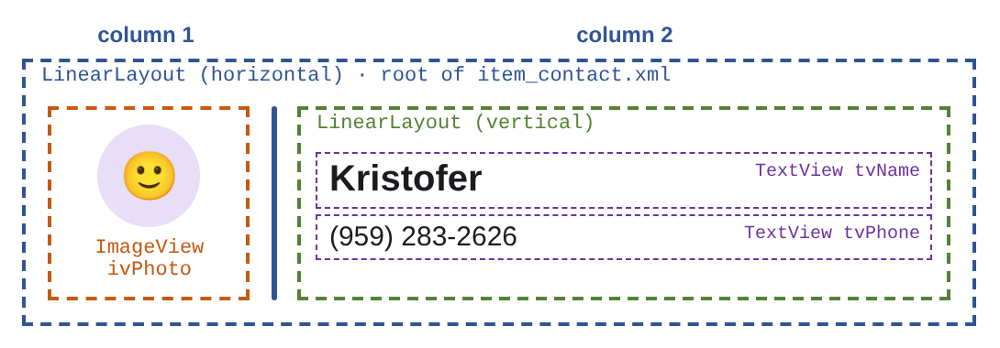
Create a new layout resource file named item_contact (Root element LinearLayout) and replace its content. The phone TextView is left for you:
<?xml version="1.0" encoding="utf-8"?><!-- Design of ONE contact row --><LinearLayout xmlns:android="http://schemas.android.com/apk/res/android" android:layout_width="match_parent" android:layout_height="wrap_content" android:orientation="horizontal" android:gravity="center_vertical" android:padding="8dp"> <!-- first column: profile picture --> <ImageView android:id="@+id/ivPhoto" android:layout_width="56dp" android:layout_height="56dp" android:layout_marginEnd="12dp" android:contentDescription="Profile picture" android:src="@drawable/profile1" /> <!-- second column: name and phone, one under the other --> <LinearLayout android:layout_width="0dp" android:layout_height="wrap_content" android:layout_weight="1" android:orientation="vertical"> <TextView android:id="@+id/tvName" android:layout_width="match_parent" android:layout_height="wrap_content" android:text="Name" android:textSize="22sp" android:textStyle="bold" /> <!-- TODO: a TextView with the id tvPhone, text "Phone", textSize 16sp --> </LinearLayout></LinearLayout>- Open activity_main.xml and replace its content with a
RecyclerView:res/layout/activity_main.xml<?xml version="1.0" encoding="utf-8"?><LinearLayout xmlns:android="http://schemas.android.com/apk/res/android" xmlns:tools="http://schemas.android.com/tools" android:id="@+id/main" android:layout_width="match_parent" android:layout_height="match_parent" android:orientation="vertical" tools:context=".MainActivity"> <androidx.recyclerview.widget.RecyclerView android:id="@+id/recyclerView" android:layout_width="match_parent" android:layout_height="match_parent" /></LinearLayout> - Now the Adapter. Create a new Java class named
ContactListAdapterand make it extendRecyclerView.Adapter. The<ContactListAdapter.ViewHolder>part says which ViewHolder class it uses. We write that class in step 9.java/com/example/contactcards/ContactListAdapter.javapublic class ContactListAdapter extends RecyclerView.Adapter<ContactListAdapter.ViewHolder> {} - The class name is underlined in red because
RecyclerView.Adapteris abstract: it has three methods that every Adapter must write. Hover over the red line, click Implement methods, keep all three selected and click OK.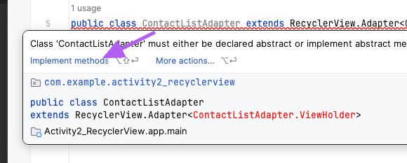
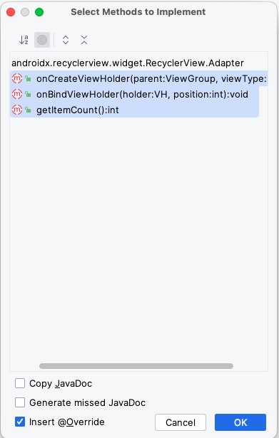
Discussion: before we fill in the three methods
Read the three method names. Which one do you think (a) makes a new row view, (b) puts one contact’s data into a row, and (c) tells the RecyclerView how many rows there are?
- Add the ViewHolder inside the Adapter class, plus the data field and a constructor. A ViewHolder keeps the references to the views in one row, so
findViewById()runs only once per row view, not every time a row scrolls onto the screen.java/com/example/contactcards/ContactListAdapter.java (inside the class, at the top)private final List<ContactVO> contacts; // the data public ContactListAdapter(List<ContactVO> contacts) { this.contacts = contacts; } // holds the views of ONE row (item_contact.xml) public static class ViewHolder extends RecyclerView.ViewHolder { final ImageView ivPhoto; final TextView tvName; final TextView tvPhone; public ViewHolder(View view) { super(view); ivPhoto = view.findViewById(R.id.ivPhoto); tvName = view.findViewById(R.id.tvName); tvPhone = ____; } } - Fill in
onCreateViewHolder(). It inflatesitem_contact.xml: it turns the XML into real View objects, and wraps them in a ViewHolder.java/com/example/contactcards/ContactListAdapter.java@NonNull @Override public ContactListAdapter.ViewHolder onCreateViewHolder(@NonNull ViewGroup parent, int viewType) { View view = LayoutInflater.from(parent.getContext()) .inflate(R.layout.item_contact, parent, false); return new ViewHolder(view); }falsemeans: useparentonly to read the layout sizes, but do not add the row to it yet. The RecyclerView adds the row itself when it needs it. - Fill in
onBindViewHolder()andgetItemCount().onBindViewHolder()gets a ViewHolder and a position, and puts the data of that contact into the row. Complete the TODO and the blank:java/com/example/contactcards/ContactListAdapter.java@Override public void onBindViewHolder(@NonNull ContactListAdapter.ViewHolder holder, int position) { ContactVO contact = contacts.get(position); holder.tvName.setText(contact.getName()); // TODO: set the phone number and the picture (ImageView: setImageResource) } @Override public int getItemCount() { return ____; // how many rows? } - Connect everything in MainActivity. Add these lines at the end of
onCreate(), then complete the TODO and the blank:java/com/example/contactcards/MainActivity.java (end of onCreate)// 1 data -> 2 Adapter -> 3 view List<ContactVO> contacts = fetchAllContactRecords(); ContactListAdapter contactsAdapter = new ContactListAdapter(contacts); RecyclerView recyclerView = findViewById(R.id.recyclerView); // TODO: set a LinearLayoutManager on recyclerView (rows one under the other) recyclerView.setAdapter(____); - Run the app. You should see the seven contacts with their pictures.
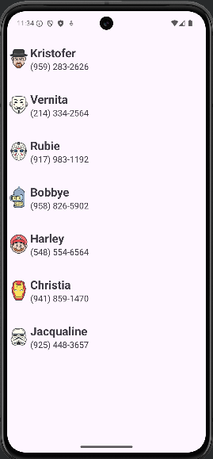
Discussion 2
a. In Activity 1, the ArrayAdapter did the work of onCreateViewHolder() and onBindViewHolder() for us. Which line in Activity 1 matched R.layout.item_contact, and which matched holder.tvName.setText(…)?
b. You never call onBindViewHolder() yourself. Who calls it, and how does it know the position?
c. Why does the inner LinearLayout use layout_width="0dp" with layout_weight="1"? (Week 4: weights.)
Activity 3 – Watching the recycling, and handling taps
Why is it called a RecyclerView? In this activity we count how many times Android creates a row view and how many times it binds data into one.
- In ContactListAdapter, add a TAG and two counters as data members of the class, then add two
Log.d()lines:java/com/example/contactcards/ContactListAdapter.java// data members (at the top of the class, under the contacts field): private static final String TAG = "ContactAdapter"; private int createCount = 0; private int bindCount = 0; // in onCreateViewHolder(), before the return: createCount++; Log.d(TAG, "CREATE #" + createCount); // in onBindViewHolder(), at the top: bindCount++; Log.d(TAG, "BIND #" + bindCount + " position " + position); - Eight contacts all fit on the screen, so nothing needs to be recycled. Make the list long by inserting the same 8 contact records 6 times (48 contacts). In
onCreate()of MainActivity, change the data line:java/com/example/contactcards/MainActivity.java (in onCreate)// List<ContactVO> contacts = fetchAllContactRecords(); List<ContactVO> contacts = new ArrayList<>(); for (int i = 0; i < 6; i++) { contacts.addAll(fetchAllContactRecords()); // 6 x 8 = 48 contacts } - Run the app. Open Logcat, type
tag:ContactAdapterin the filter box, and fill in the After launch column. Then scroll slowly to the end of the list and fill in the last column.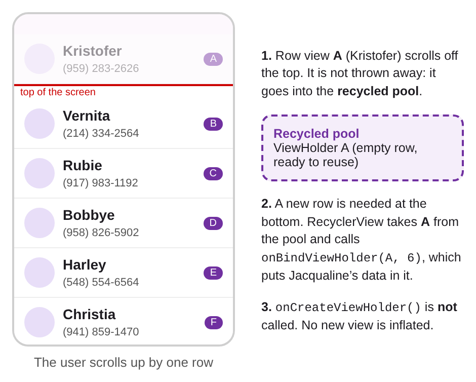
What happens when the user scrolls: a row view that leaves the screen is reused for the next contact
Discussion 3
a. Why did CREATE stop at a small number, while BIND kept going? Use the picture above to explain it.
b. A phone has 10,000 contacts. Without recycling, how many row views would the app create? Why is that a problem on a phone?
c. Now explain the job of the ViewHolder again. Why is it useful that findViewById() is in the ViewHolder and not in onBindViewHolder()?
- Make the rows respond to a tap.
RecyclerViewhas nosetOnItemClickListener()like ListView. Instead, each row view gets its own click listener.holder.itemViewis the whole row. Add this at the end ofonBindViewHolder()and fill in the blank so the Toast shows, for example, Rubie: (917) 983-1192:java/com/example/contactcards/ContactListAdapter.java (end of onBindViewHolder)holder.itemView.setOnClickListener(new View.OnClickListener() { @Override public void onClick(View v) { String message = ____; // for example "Rubie: (917) 983-1192" Toast.makeText(v.getContext(), message, Toast.LENGTH_SHORT).show(); } });
Activity 4 – Bug hunt
Each snippet below has one change from your working ContactCards or ContactList app. First write down what you think happens: an empty list, a crash, or a strange layout. Then try the ones we pick in class, and compare.
| # | The change | My prediction | What really happens |
|---|---|---|---|
| 1 | In getItemCount(): return 0; | ||
| 2 | The recyclerView.setLayoutManager(…) line is deleted. | ||
| 3 | In item_contact.xml, the root has android:layout_height="match_parent". | ||
| 4 | In onCreateViewHolder(): .inflate(R.layout.item_contact, parent, true) | ||
| 5 | In Activity 1: new ArrayAdapter<>(this, R.layout.item_contact, contacts) (a row whose root is a LinearLayout). | ||
| 6 | In onBindViewHolder(): holder.tvPhone.setText(contact.getPhoneNo().length()); |
Discussion 4
a. Two of the bugs give an empty screen with no crash. Which ones? Where would you look first to find the cause?
b. Bug 6 crashes with Resources$NotFoundException. setText() has a version that takes an int. What does Android think that int is?
Post-Lab Assignment (10 marks)
Start from your ContactCards project. Remove the 6× loop from Activity 3, so each contact appears once.
Modify the app to show each contact’s email address under the phone number. Use these emails for the seven contacts, and make up one for the 8th contact you added:
| Contact | |
|---|---|
| Kristofer | kristofer@aol.com |
| Vernita | vernita@yahoo.com |
| Rubie | rubie@msn.com |
| Bobbye | bobbye@gmail.com |
| Harley | harley@davidson.com |
| Christia | christia@rocketmail.com |
| Jacqualine | jacqualine@uitm.edu.my |
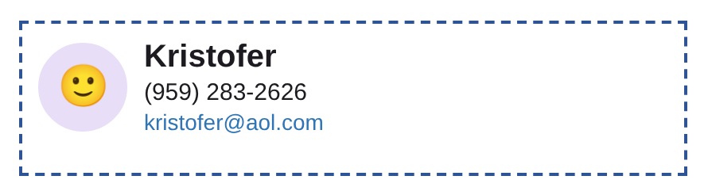
One row of the finished app
Then add one more contact with your own name, phone number and email (any picture).
Record a short video (at most 3 minutes) that shows the app running and explains the changes you made to the Data, the Layout and the Adapter.
Marks: the 10 marks are given for the video explanation.